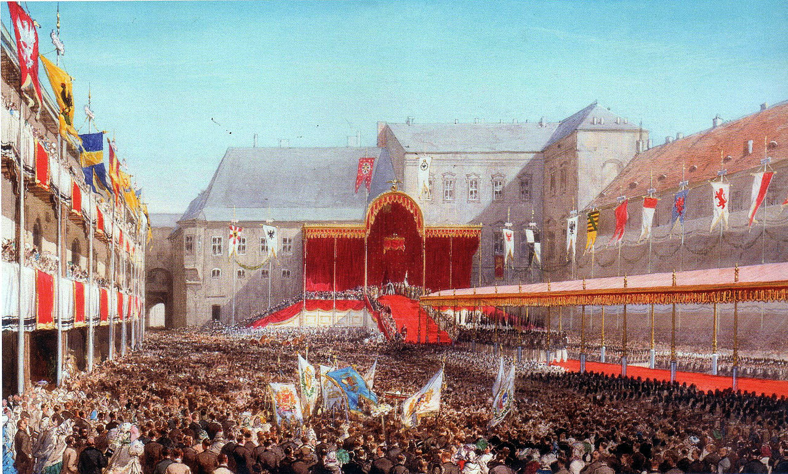
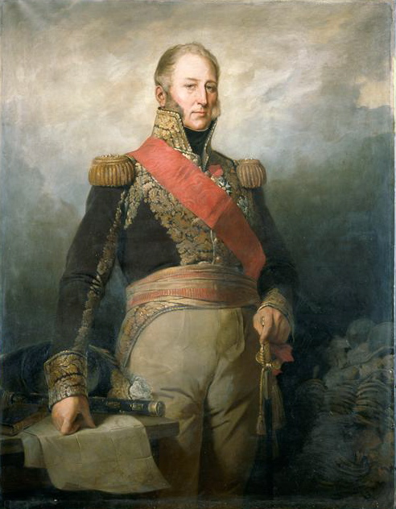
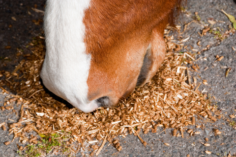

1812년 그랑다르메(Grande Armée)의 내부 상황 (4편)
게시: 2019-10-14T06:30:22+09:00
'곳간에서 인심난다'라는 속담이 있습니다. 이건 진짜 동서고금을 관통하는 명언입니다. 배가 고픈 사람들에게서 염치, 질서, 관용, 정의 따위를 기대해서는 안 됩니다. 특히 그들이 군복을 입고 있다면 더욱 그렇습니다. 단치히나 기타 주요 군수 창고에 얼마나 많은 군수품이 쌓여 있든 당장 배가 고픈 군대에게는 아무런 도움이 되지 않았습니다. 제11 경보병 연대 소속 쥬세페 벤투리니(Giuseppe Venturini)라는 피에몬테(Piemonte) 출신의 중위는 자신이 수행하는 '징발'로 인해 2~3백 가구가 당장 거지꼴이 되었다면서 마음이 아프다는 기록을 남겼습니다. 하지만 이렇게 자신의 징발 결과에 대해 마음 아파하는 장교가 수행하는 징발은 그나마 양반이었습니다. 원래 프랑스군의 현지 조달 및 징발 기술은 예술의 경지에 달한 것이어서, 다들 굶주리고 바쁜 와중에도 효율적으로 식량을 수집하고 적재적소에 분배했을 뿐만 아니라 식량을 빼앗기는 현지 주민들에게 영수증도 꼬박꼬박 써주었습니다. 그러나 이 모든 것은 척박한 폴란드 현지에서는 통하지 않는 이야기였습니다. 뒤져도 나오는 것이 거의 없는 현실에 분노하고 짜증이 난 병사들은 죄없는 폴란드 농민들의 집과 창고를 마구 때려부쉈습니다. 특히 이들은 각자의 소속 국가의 깃발 아래가 아니라 그랑다르메라는 다국적 군대의 깃발 아래 움직이는 것이다보니 몰염치가 더욱 심했습니다. 심지어 폴란드군까지도 폴란드 농민들을 마구 약탈했습니다. 제5 폴란드 기마 라이플병 연대의 18세짜리 소년 대위는 다음과 같이 적었습니다. "프랑스군은 자기들이 가져가는 것, 심지어 가져가기 원하는 것 이상으로 때려부쉈다. 민가에 들어가서는 손에 닿는 모든 것을 박살을 냈다. 창고에는 아예 불을 질렀다. 밀밭이 있을 경우, 그 한가운데로 말을 몰고 들어가 마구 짓밟으며 말에게 설익은 밀을 먹였는데, 먹이는 것 이상으로 많은 밀을 완전히 망쳐놓았다. 이건 불과 두어 시간 뒤에는 뒤따르는 그들의 굶주린 동료들도 거기에 와서 말을 먹여야 한다는 것을 전혀 고려하지 않은 무의미한 파괴행위였다." 일이 이렇게 되다보니 그랑다르메가 집결하는 네만 강 서안 지역은 분명히 아군 지역임에도 불구하고 난장판이 되었습니다. 길 가의 집들은 모두 창문이 깨지고 울타리는 장작불에 쓰느라 뜯겨졌으며, 많은 집들이 반쯤 무너져버렸습니다. 군복이 보이기만 하면 주민들이 도망치던 폴란드는 그나마 양반이었습니다. 동프로이센에서는 이런 난장판에 민족적 감정까지 더해졌습니다. 발에 물집이 생기는 작은 부상이든 티푸스든 어떤 군대에게나 낙오병은 반드시 생깁니다. 그런 낙오병들은 동프로이센 주민들의 습격을 받고 학살되었습니다. 그랑다르메 소속의 같은 독일어를 사용하는 병사들도 습격 대상이 되는 것은 마찬가지였습니다. 물론 그랑다르메 병사들도 똑같은 적개심을 가지고 동프로이센 주민들을 대했습니다. 네덜란드 출신의 예프 아빌(Jef Abbeel)이라는 병사의 기록에 따르면 이들은 숙영하는 마을마다 주민들의 가축을 필요 이상으로 모조리 도살하고 술과 식량을 빼앗는 것은 물론, 꽤 떨어진 인근 도시에 가서 자기들이 주문하는 물건을 구해오라고 주민들을 내몰았습니다. 주문 품목 중 하나라도 못 구해오면 몽둥이 찜질로 교육을 했습니다. 뿐만 아니라 심심하다고 주민들에게 춤을 추고 노래를 부르게 했습니다. 거절할 경우 주민들은 역시 또 흠씬 두들겨 맞아야 했습니다. 당연히 주민들의 감정은 더욱 나빠지는 악순환이 이어졌습니다.

(제1차 세계대전 때 독일의 힌덴부르크 장군은 '동프로이센 사람들은 독일인이라기보다는 슬라브인에 가깝다'라며 투덜거린 바 있습니다. 실제로 동프로이센은 독일화가 많이 진행되긴 했지만 원주민인 슬라브인들을 소수의 독일계 튜톤 기사단이 정복해서 만들어진 왕국이므로 힌덴부르크의 말이 사실일 것입니다. 그래도 동프로이센이 프로이센 왕국의 발상지인지라 프로이센 왕국에서 동프로이센이 차지하는 상징적인 의미는 컸습니다. 가령 윗그림의 1861년 프로이센 국왕 빌헬름 1세의 즉위식은 동프로이센의 수도인 쾨니히스베르크(Konigsberg)에서 열렸습니다. 이 빌헬름 1세가 어린 시절인 1806년 나폴레옹에게 쫓겨 엄마와 함께 메멜까지 도망쳐야 했던 어린 왕자가 맞습니다. 또 임마누엘 칸트도 바로 이 쾨니히스베르크 출신이지요. 지금 쾨니히스베르크는 러시아의 해군 도시 칼리닌그라드(Kaliningrad)가 되었습니다.)
앞서 나폴레옹이 대규모로 징집된 신병들의 숙련도에 대해 걱정하는 부하의 말에 대해 심리전에 있어서 질보다는 양이 중요하다며 일축했다는 일화를 언급했었지요. 그랬던 나폴레옹도 폴란드의 포즈난(Poznan)에 입성할 때 그를 맞이하기 위해 도열한 폴란드 비스툴라(Vistula) 군단을 실제로 보고는 꽤 걱정이 되었나 봅니다. 이 부대는 최근까지 스페인에 파견되어 있다가 러시아 원정을 위해 막 귀환한 상태였는데, 사상자로 인한 결원을 보충하기 위해 많은 수의 신병들을 채워넣어야 했습니다. 그는 이 군단의 지휘관인 모르티에(Mortier) 원수에게 이렇게 말했습니다. "이 친구들은 너무 어리군. 내게 필요한 건 전장의 고생을 견딜 만한 병사들일세. 저렇게 어린 친구들은 야전 병원만 가득 채울 뿐이야."

(모르티에(Édouard Mortier) 원수입니다. 그의 이름은 재미있게도 프랑스어로 박격포라는 뜻이기도 합니다. 그는 훗날 7월 혁명으로 왕위에 오른 루이 필립 왕 밑에서 국방부 장관을 지냈는데, 루이 필립을 암살하려다 미수에 그친 1835년의 폭탄 테러에서 희생되고 말았습니다. 루이 필립이 그의 죽음을 무척이나 슬퍼했다고 합니다.)
나폴레옹이 나이 어린 친구들에게 편견이 있었던 것이 아니었습니다. 실제로 다부 휘하의 제85 전열 보병 연대의 한 소령은 네만 강가에 도착할 때까지 신병의 20%를 잃었다고 투덜거렸습니다. 식량도 부족한 상태에서 먼 길을 일정에 맞춰 행군을 하다보니 탈진과 질병, 소소한 부상으로 쓰러진 병사들이 깜짝 놀랄 정도로 많았습니다. 당연히 도망병들도 많았고 심지어 자살하는 병사들도 꽤 있었습니다. 말의 경우는 더 심각했습니다. 1812년 봄은 특별히 기온이 낮았습니다. 이로 인해 곡식 뿐만 아니라 풀도 늦게 싹을 틔웠습니다. 나폴레옹이 굳이 6월 말까지 러시아 원정을 기다린 것은 말이 부족한 사료 대신 뜯어 먹을 풀이 충분히 자라길 기다린 것이었는데, 그게 다 소용이 없었습니다. 근위 포병대의 불라르(Boulart) 대령은 이렇게 기록을 남겼습니다. "우린 초지의 풀을 잘라 걷어들였는데, 그게 다 떨어지자 밀과 보리, 귀리를 걷어들여야 했는데, 그것들은 이제 막 싹이 튼 것이나 다름없는 상태였다. 그렇게 함으로써 우리는 그 해 수확을 망쳐버렸을 뿐만 아니라 우리 말들에게 최악의 사료를 주면서 중노동을 시키느라 말들의 죽음을 준비한 것이나 다름 없었다."

(흔히 말 사료라고 하면 귀리나 옥수수를 떠올리는데, 의외로 말은 세심하게 사료 성분을 조정해주어야 한답니다. 가령 귀리에는 인 성분이 풍부하고 칼슘이 부족한데, 이는 말에게 필요한 비율인 칼슘:인 = 2:1과는 정반대의 비율이라서 귀리 위주로 사료를 줄 때는 반드시 석회가루 같은 것을 추가해서 칼슘 성분을 보완해줘야 한답니다. 또 옥수수 같은 경우 전분이 풍부해서 좋긴 한데 옥수수를 갈아서 준다고 해도 말은 옥수수 성분의 45% 정도 밖에 소화를 못 시킨다고 합니다. 흔히 덩치 큰 말이 사람보다 강하다고 생각하지만 생존력 자체는 사람이 더 좋은 모양이에요.)
실제로 아직 네만 강을 건너지도 않았는데 위에 언급한 이유로 죽은 말들이 꽤 많았습니다. 길가에는 그런 말 시체들이 즐비하게 널려 있었고 그것들을 을씨년스럽게 개들과 까마귀떼가 뜯었습니다. 말들이 죽었으니 그 말들이 끌던 짐마차도 당연히 버려졌습니다. 나폴레옹의 의붓아들 외젠 밑에 소속된 바이에른(Bayern) 장교 하나는 죽은 말과 버려진 마차의 수가 많은 것에 놀라 아래와 같이 적었습니다. "누구든 이 광경을 보면 전진하는 군대가 아니라 허겁지겁 퇴각하는 군대의 뒤를 따라가고 있다고 생각할 것이다." 그러나 이런 상황에도 불구하고 프랑스군 장군들과 장교들의 임전 태세는 과거에 비해 크게 태평한 편이었습니다.
<다음 편에 계속> Source : 1812 Napoleon's Fatal March on Moscow by Adam Zamoyski
https://en.wikipedia.org/wiki/%C3%89douard_Mortier,_Duke_of_Tr%C3%A9vise